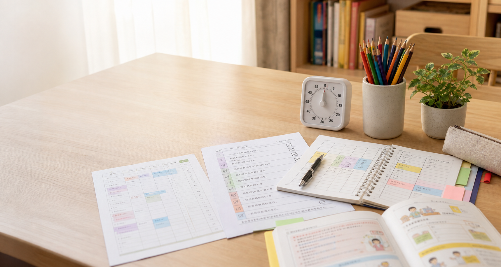

生活結構
把早晨、放學後、睡前改成少步驟的視覺流程。

ADHD 家庭本位計劃的重點，是把家庭系統改得更容易成功：流程更清楚、目標更小、回饋更即時、衝突更容易降溫。
產生器會依孩子年齡、主要困難、家庭時間、學校支持程度，產生 4 週或 8 週計劃。資料只留在你的裝置，不需要登入，也不會上傳。
把早晨、放學後、睡前改成少步驟的視覺流程。
追蹤具體行為，不追蹤「乖一點」這種模糊要求。
用 10-20 分鐘短任務降低開始作業的阻力。
先降溫，再討論；先練固定步驟，再期待孩子說清楚。
每天保留短時間不糾正，只建立連結與可預期感。
每週只追蹤 1-2 個目標，讓老師與家長用同一張表溝通。
指南內容從 AAP、CDC、NICE 與行為家長訓練觀點整理，並保留清楚的專業轉介提醒。
ADHD 評估與治療需考慮家庭、學校、共病與發展脈絡。
兒童 ADHD 治療可結合行為治療、家長訓練、學校支持與藥物討論。
家長訓練與教育方案可支持親子關係與兒童行為改善。